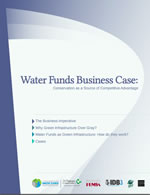

Water Funds
Brochure

An overview of NatCap's work on water funds in Latin America (pdf)
Water Fund Highlights
Diverse InvestorsWater funds encourage collective innovation among sectors (including private companies, public agencies, and community partners) who all depend on a clean, ample water supply.
Balanced Infrastructrue
Investments in watershed services facilitate a balance of 'built' with 'natural' infrastructure development to protect natural services that supply and clean water.
Distribution of Benefits
Improvements to watershed management, financed by water funds, result in far-reaching benefits to a broad population of water users.
Science-Based Investment NatCap applies a science-based approach to support transparent and replicable water fund investment schemes. Water funds are using the RIOS tool to prioritize investments, according to the estimated effectiveness of land-use changes on ecosystem service provision.
The Business Case

Water is essential to the production of nearly every product in the global economy. Read about the business case for investment in water funds and their success across Latin America.
Water Funds
Water funds enable water users to finance conservation and improvements to land management, with the aim of protecting water quality and quantity. These funds are proliferating throughout Latin America as a collaborative approach to secure water supplies for the future.
NatCap supports the Latin American Water Funds Partnership (The Nature Conservancy, Inter-American Development Bank, Global Environment Facility and FEMSA Foundation) in the design and development of water funds throughout twelve countries in the region.
Some water fund investors are using NatCap's RIOS software to support their funding decisions. RIOS produces a portfolio with investment options ranked by data on an activity's cost, feasibility, and expected effectiveness given the physical setting and current land use near a watershed.
How They Work
Water funds create a long-term revenue source for financing land management practices that sustain water supply and quality. Water funds support diverse activities impacting land use, and differ according to the ecological conditions of a watershed, the objectives of investors, and the needs of local communities.
Some funds combine private and public investment to initiate community-wide restoration projects in villages upstream from urban centers. In others, municipalities collect fees from water users to compensate land owners for conservation or restoration of their riverside land.
A single water fund may invest in fencing sensitive areas, planting native vegetation, or improving land use practices in crop and pasture lands. These activities produce ecological and economic returns in the form of sustained water provision, and purification and flow regulation services at lower costs than other strategies, such as water treatment plants or dams.
Water Funds in Latin America
In 2011 the Latin American Water Funds Partnership committed to developing 32 new water funds in Latin America over five years, pledging $27 million to restore over seven million acres of watersheds.
Today there are over 30 water funds in operation or in designing stages (map left). 15 additional locations are being evaluated for their potential to initiate funds.
Click here for detailed information and updates on individual water funds.
Preliminary Results
- Built capacity across water funds, and hosted trainings for data analysts throughout Latin America. Provide continued scientific counsel to high-level managers and project implementers.
- Launched RIOS (Resource Investment Optimization System) software tool in 2013, to standardize water funds investment design and maximize ecological returns on investment. The tool has been tested in several emerging water funds and has proven useful for managers and flexible enough to apply in different environmental, social, and legal contexts.
- Expanding water funds globally: Our goal is to provide a standardized approach to water fund design and conservation investment in contexts throughout the world.
Publications
Application of InVEST`s Sedimentation Retention model for restoration benefits forecast at Cantareira Water Supply System
João Guimarães
The Nature Conservancy - Programa de Conservação da Mata Atlântica e Savanas Centrais
Water funds and payments for ecosystem services: practice learns from theory and theory can learn from practice
Rebecca L. Goldman-Benner, Silvia Benitez, Timothy Boucher, Alejandro Calbache, Gretchen Daily, Peter Kareiva, Timm Kroeger, and Aurelio Ramos
Oryx, 46(1), 55-63 (February 2012)
Linking People and Nature through Watershed
Conservation in the East Cauca Valley, Colombia
Rebecca L Goldman, Silvia Benitez, Alejandro Calvache, Sarah
Davidson, Driss Ennaanay, Emily McKenzie, Heather Tallis
TEEBcase (2010)
Download from naturalcapitalproject.org or www.eea.europa.eu/teeb
Water Funds: Protecting Watersheds for
nature and people
Goldman, R.L., Benitez, S., Calvache, A., and Ramos, A.
Not Peer-reviewed: The Nature Conservancy Arlington, VA. (2010)
Links
TNC Latin American Water Funds Program
Latin American Water Funds Partnership
Alianza Latino Americana de Fondos de Agua
Inter-American Development Bank (IDB)
Andes/Amazon ESPA program: Ecosystem Services and Poverty Alleviation
Colombia Ministry of the Environment
Secretaria Nacional de Planificacion y Desarrollo (Ecuador - SENPLADES)
Water Funds Prioritization Guidance
Contact
Adrian Vogl, Ph.D.
Program Manager, Freshwater Services
avogl@stanford.edu